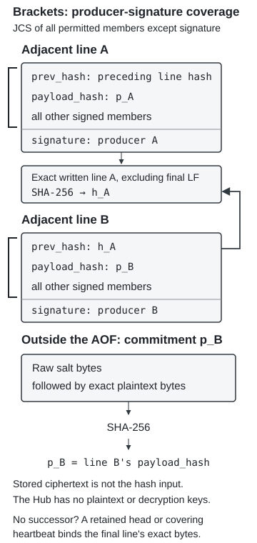

%%{init: {"flowchart": {"nodeSpacing": 15, "rankSpacing": 30, "padding": 8}}}%%
flowchart TB
H["Hub"]
B["Buyer's copy<br/>… → hash A"]
W["Warehouse's copy<br/>… → hash B"]
P["Heartbeat host<br/>Hub-signed heartbeat<br/>hash A"]
H -->|"Serves one<br/>history"| B
H -->|"Serves another<br/>history"| W
P -->|"Pulls the signed<br/>heartbeat"| H
P -.->|"A matches A"| B
P -.->|"B differs from A"| W
4 How EventChain Works
Producers sign entries into an append-only file (AOF), a single Hub orders and distributes the file, and every holder verifies its own copy. A topic is one history (the events a deployment collects together in one AOF). Checking the chain and the producer signatures needs only the file and no trust in the Hub; naming the signer and confirming that a copy is current need further evidence (Section 4.9.1). The byte-level rules an implementer needs are in the Specification appendix.
4.1 Append-Only File
The AOF is a JSON Lines (JSON Lines 2023) document, one JSON object per line. Each entry carries a salted hash of its payload, a locator for the payload, the SHA-256 hash of the previous line, the signer’s public key and an ECDSA-P256 signature over every other member (Table 4.1, Figure 4.1). Producers encrypt payloads before they reach the Hub, so the Hub holds or relays ciphertext only and never has plaintext or decryption keys.
| Field | Example | Purpose |
|---|---|---|
entry_id |
evt-042 |
Producer’s reference; arbitrary text that need not be unique |
payload_hash |
obPN0cqZ... |
Salted hash of the plaintext payload (Section 4.2) |
payload_ref |
ref-042 |
Opaque locator for the payload |
prev_hash |
_-bFxIQ3... |
SHA-256 of previous line’s bytes |
public_key |
Aw4rK2p1... |
Signer’s public key |
signature |
8QDxLmE7... |
ECDSA-P256 signature over entry.data() (entry specification) |

Because the signature covers prev_hash, each producer signs its own position in the chain. Editing any line or moving an entry to a different predecessor invalidates a producer signature that the Hub cannot recreate, so the ordering guarantee rests on the producers’ keys. An entry’s unique identifier, its Event ID, is the SHA-256 hash of its exact written line, and later entries refer to earlier ones by it.
4.2 Payload Hash
payload_hash is SHA-256(salt ‖ payload) over a fresh random salt followed by the exact plaintext bytes. Nobody without the salt can test guesses against the hash, and whoever holds the plaintext and the salt can recompute it, so each holder keeps the salt with the payload. The AOF names no signer, only a public key; the signer’s identity and role sit in the payload under access policy (Section 4.7).
4.3 What a Signature Proves
A device or a software service signs its entries directly: a sensor signs each measurement at source with a hardware-held key. A person’s passkey cannot sign arbitrary bytes, so the producing system signs the entry and the person confirms it in a separate Mint entry whose WebAuthn challenge is the confirmed entry’s Event ID (WebAuthn checks). In every case a valid signature proves that a key signed these bytes. What it proves about who acted depends on where the key lives (Table 4.2).
| Signer | Where the key lives | What a valid signature proves |
|---|---|---|
| Device | TPM, physically unclonable function (PUF) or secure element | This key signed these bytes. Binding the key to a particular device rests on enrolment or attestation evidence and on the key’s actual protection; the signature shows nothing about calibration, attachment or the measurement path |
| Software service | Cloud key-management service | Something able to use the key signed. The file does not say which workload, person or administrator caused the signature |
| Software in an attested enclave | Enclave bound to measured code | Under the platform’s attestation assumptions, the key belongs to the measured code. A model counts only if the validated measurement covers it |
| Person | Passkey | The passkey answered this challenge with the checked flags. Naming the person and role rests on enrolment evidence and passkey-control policy |
A registry binds each public key to a person, device, service or role, with the enrolment evidence behind the binding. A registry is a topic like any other, and a holder verifies it with the same checks. It cannot write, reorder or block an entry in any other topic. A binding that others rely on carries two signatures, the subject’s offer and the registry keeper’s acceptance, so neither party creates it alone (registry conventions, three of them still open). An organisation keeps a registry for its own signers. An authority or community keeps one that binds each organisation’s root key to its legal identity.
Each topic declares the registries it accepts, by root key directly or through a binding in a registry it already accepts. It changes that declaration only with its other parties’ countersignature, because otherwise the party that started the topic could swap registries and re-attribute past signatures. The chain of registries ends at a root key that the parties accept outside the protocol, as a browser accepts its root store (Reddy and Wallace 2010). A binding shows whom its keeper says a key belongs to.
A signature carries no ongoing authority and no time, so a departed employee’s earlier signatures stay valid. A lost key leaves the chain intact: the keeper retires it and the organisation enrols a new one. A compromised key differs, because someone else may sign with it. The keeper therefore signs a compromise claim that names the time from which the key is suspect, and the claim stands beside the history as a visible dispute that erases nothing. The verifier reports each entry the key signed between that time and the claim as inside the claimed window, and the application decides. A payload may state a time, but the signer asserted it, and whoever holds a stolen key asserts whatever suits them. So the verifier places an entry in time by the heartbeats and anchors around it (Section 4.4.1, Section 4.8), and no finer than they allow. The verifier reports signature validity, binding evidence, compromise status and authorisation separately.
4.4 Append Protocol
The head is the hash of the last line in the chain. A producer keeps the head it last appended or observed (its retained head) and submits against a verified expected head. Because the signature covers prev_hash, changing that field requires signing again.
- The producer requests the current head and any entries since its retained head. It accepts a matching head with no new entries, or verifies an extension to the new head. If the Hub supplies a history that omits the retained head, the producer treats it as evidence of rollback or truncation and does not sign against it.
- The producer prepares a submission of one or more entries. It sets the first entry’s
prev_hashto the verified current head and each later entry’sprev_hashto the hash of the entry before it in the submission, signs each entry, and submits them together with that expected head (submission format). - The Hub accepts the submission only if its current head still matches the expected head, and appends it whole or not at all. After the append, the producer retains the new head.
- If another submission arrived first, the Hub rejects this one. The producer obtains and verifies the new extension, sets the first entry’s
prev_hashto the new head, signs the whole submission again and resubmits against that head.
The Hub applies to each line of a submission exactly the checks a verifier applies to one line: the line is well formed under the entry specification, prev_hash equals the current head for the first line and the hash of the preceding line for every later one, and the key on the line signed it. It appends every submission whose lines all pass, whole or not at all, whatever the entry says and whoever holds the key, and judges nothing else; a false statement or an unbound key enters the history, where the verifier reports it and the other parties contest it (Section 4.6). A submission that passes receives a signed receipt, the Hub’s commitment that it is in the history at that position, and one that fails receives a signed refusal naming the submission hash, the line that failed, the reason and the Hub’s asserted time (receipt and refusal). The submitter retains it, so a refusal of a valid submission is evidence against the Hub.
A valid chain can still be an old prefix, so the protocol requires the Hub to issue signed heartbeats that trusted heartbeat hosts pull and publish. Every holder, including a first-time one, retrieves the latest heartbeat for its topic from a host and checks its copy against it, and so detects an out-of-date copy or a diverging history without contacting other holders. Two conflicting heartbeats under the Hub’s key attribute the fork to the Hub. These are the established properties of fork consistency (Li et al. 2004) and accountability (Laurie et al. 2013). The publication interval bounds freshness, and each host must preserve every heartbeat and show everyone the same list.
4.4.1 Hub Heartbeat
A heartbeat carries the topic’s head, the entry count and the time of issue under the Hub’s signature. The Hub issues one at the agreed interval even when no entries arrive and serves it at its heartbeat endpoint. A heartbeat host pulls it at that interval, checks the signature under the accepted Hub key and, holding the file, that it names the file’s head, then publishes it. A host preserves every heartbeat for each topic it serves and publishes the Hub key the topic accepts; a Hub that stops issuing heartbeats shows as a gap at every host. Section 5.1 proposes who should decide which hosts a topic trusts. Every holder compares its own copy with the heartbeat a host serves (Figure 4.2). The time is the Hub’s own assertion; independent timestamping can add external time evidence (Section 4.8). Heartbeat Encoding and Retrieval specifies the format and retrieval.
Suppose the Hub serves different histories to a buyer and a warehouse that share one topic. Both copies pass their chain and producer-signature checks, but they contain different hashes at the same position. The warehouse detects the disagreement by comparing its hash with the heartbeat the host serves (Figure 4.2), without contacting the buyer.
The comparison needs a recent heartbeat under the accepted Hub key, from a host that serves everyone the same list. A heartbeat vouches for the history up to the entry it names and for nothing after it. A copy that stops short of that entry is missing part of the published history, and an old heartbeat says nothing about whether a copy is current. A matching heartbeat shows that a holder has the same history as everyone else who checks it. Whether that history is genuine is a separate question, which the producer signatures answer: a Hub that appended a forged entry would publish a heartbeat over it, and only the signature check on that entry catches it.
4.5 Scale and Ordering
The Hub appends on a single thread per topic, so each topic has one ordered history and different topics proceed independently. Each accepted submission costs one append and no multi-party consensus round. A holder that keeps a verified prefix verifies only the extension; Section 3.2 gives the measured rates.
4.6 Cryptographically Bound Contracts
A Cryptographically Bound Contract (CBC) records a two-party agreement as two entries: the offering party signs an offer, and the accepting party signs an acceptance that names the offer by its Event ID (CBC references). A custody transfer is one instance; a supplier’s acceptance of shared data under agreed terms is another (worked example). Until the acceptance exists the CBC is pending, and any party inspecting the chain sees the missing acceptance.
A correction, an objection or a resolution is likewise a new signed entry that names the entry it addresses (correction references). The original stays in the chain, no later statement overrides it automatically, and application policy decides who may make each kind of statement.
4.7 Access to Payloads
Applications decide which holders may retrieve and decrypt each payload, and a Hub or storage service can enforce that without holding decryption keys. A regulator may read every payload while a customer reads only those under its contract, yet both hold the same AOF and run the same checks on it (payload access and export). An application the parties authorise can act on the evidence as soon as it meets the application’s rules, with no person checking each step again. Systems subscribe to a topic over HTTP and receive each entry as the Hub appends it. Each keeps its own copy and verifies it.
4.8 OpenTimestamps
An optional daily OpenTimestamps (OTS) rollup anchors the current chain head in Bitcoin, which shows that the committed bytes existed before the time of a validated anchor (OpenTimestamps 2026; Todd 2016). That evidence relies on the Bitcoin network and on validation of the proof, independent of the Hub, and does not show when the events occurred. A Hub can anchor both branches of a fork, so OTS protects against neither split views nor stale copies.
4.9 Verification
The verifier reports separate conclusions about a history (Table 4.3). A holder can check its chain and signatures without payload access, and can validate an external time proof without the plaintext.
4.9.1 What Each Check Needs
| Independent check | Evidence beside the AOF | Check and result |
|---|---|---|
| Chain and producer signatures | None | Check predecessor hashes and signatures: each entry binds to its predecessor and each signature verifies under the key embedded in it. Hash links alone authenticate nothing. |
| Named attribution | Enrolment and compromise/dispute evidence | Report key validity, identity binding and dispute status separately (Table 4.2). |
| Freshness and shared history | Accepted Hub key, publication settings, authenticated heartbeat from a named host | Compare the covered-position hash; report match or deficiency (Figure 4.2). The heartbeat covers only that prefix. |
| Payload commitment | Exact plaintext and retained salt | Hash raw salt bytes followed by exact plaintext bytes. A match shows that these are the bytes the entry committed to. |
| External time (optional) | Complete OTS proof and validation context; no plaintext | Validate proof and coverage: existence before anchor time, not event time (Section 4.8). |
The application decides whether the evidence suffices and whether the signer had authority to act. If heartbeat evidence is missing, stale or conflicting, it pauses dependent actions for the topic, keeps capturing and queuing events locally, and escalates (heartbeat outcomes).